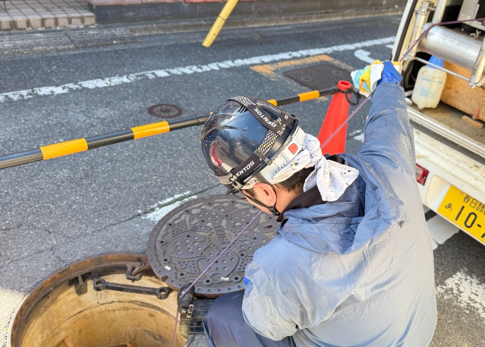
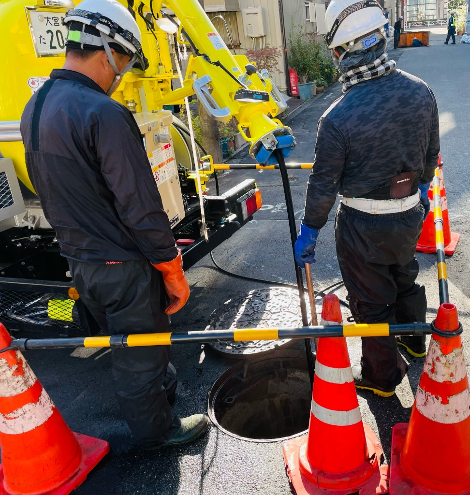
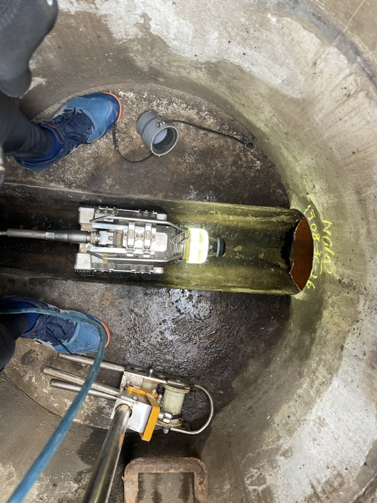
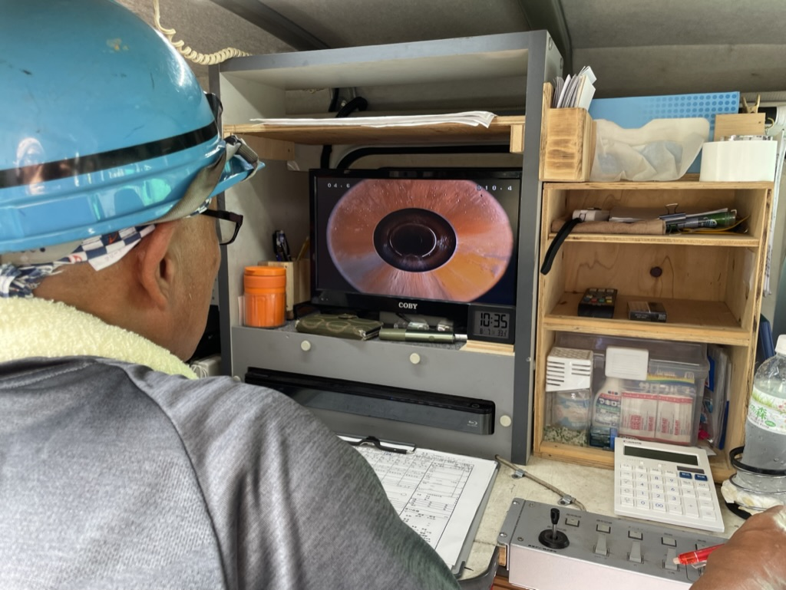
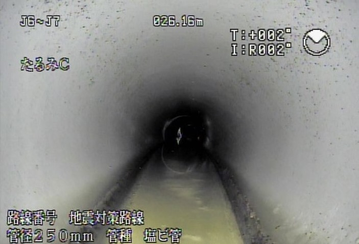
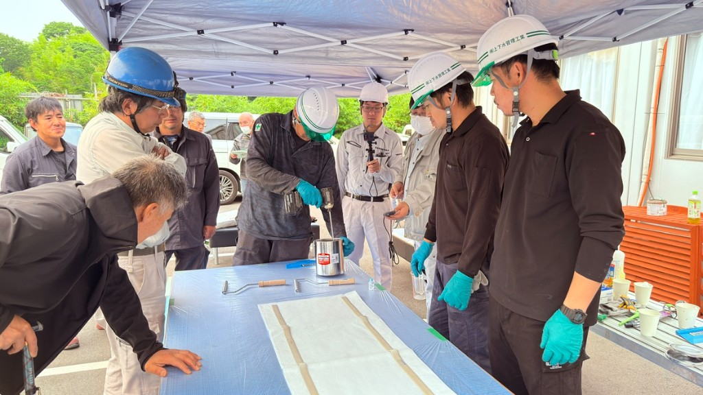

2025.12.23
ソーラーパネル清掃の重要性と最適な頻度
発電効率を最大化するための清掃ポイントを解説。
INSPECTION & CLEANING
下水道管路内調査清掃を中心に、太陽光設備清掃管理、赤外線による外壁劣化診断、ドローン測量まで。 専門技術と最新機材で、インフラ・建物・環境の調査をトータルサポートします。
SERVICES
下水道管路内調査清掃をメインに、建物・設備の調査・清掃サービスをご提供します。
発電効率を維持するソーラーパネルの清掃・管理サービス
赤外線カメラによる高精度な外壁劣化診断・調査
最新ドローン技術を活用した測量・空撮・点検調査・地域の環境調査










GALLERY
マンホール点検、管内カメラ調査、ロボット調査など、実際の現場で撮影した写真をご紹介します。